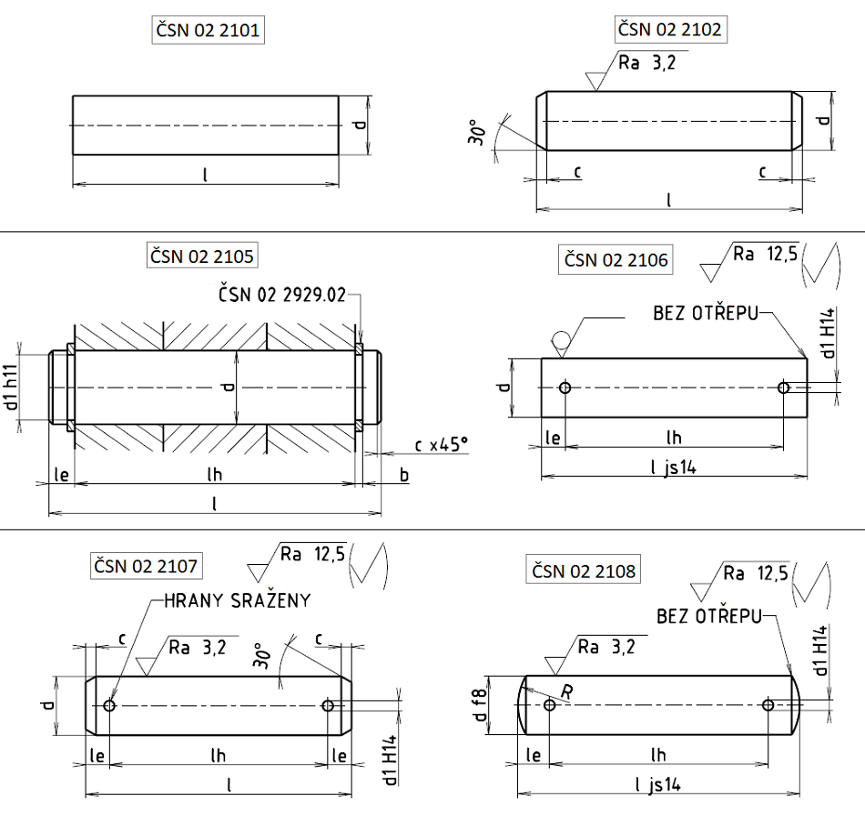

Příklad označení čepu bez zkosených hran o průměru d = 10h11 s délkou l = 60 mm z oceli 11 109, bez povrchové úpravy:
ČEP 10×60 ČSN 02 2101.00
Příklad označení čepu se zkosenými hranami o průměru d = 10h8 s délkou l = 60 mm z oceli 11 109, bez povrchové úpravy:
ČEP 10×60 ČSN 02 2102.00
Příklad označení čepu s drážkami pro třmenové kroužky s mezními úchylkami f7 o průměru dříku d = 16 mm se svěrnou délkou l1 = 50 mm:
ČEP 16f7×50 ČSN 02 2105.00
Příklad označení čepu s drážkami pro třmenové kroužky s mezními úchylkami h11 o průměru dříku d = 16 mm se svěrnou délkou l1 = 50 mm:
ČEP 16h11×50 ČSN 02 2105.00
Příklad označení pozinkovaného čepu z automatové oceli, s dírami pro závlačky, o průměru dříku d = 16h11 mm s délkou l = 50 mm a s roztečí děr pro závlačky l1 = 40 mm:
ČEP 16×50×40 ČSN 02 2106.05
Příklad označení pozinkovaného čepu z automatové oceli, s dírami pro závlačky, o průměru dříku d = 16h8 mm s délkou l = 50 mm a s roztečí děr pro závlačky l1 = 40 mm:
ČEP 16×50×40 ČSN 02 2107.05
Příklad označení pozinkovaného čepu z automatové oceli, s dírami pro závlačky, o průměru dříku d = 16f8 mm s délkou l = 50 mm a s roztečí děr pro závlačky l1 = 40 mm:
ČEP 16×50×40 ČSN 02 2108.05
POZNÁMKY
První doplňková číslice označuje materiál čepu:
0 … 11 109
1 … 11 500
2 … 11 6000
9 … podle zvláštního předpisu;
Druhá doplňková číslice označuje úpravu povrchu čepu:
0 … bez úpravy
4 … kadmiováno (závadné z hlediska životního prostředí, nedoporučuje se)
5 … zinkováno
8 … chromováno
9 … podle zvláštního předpisu;
Normalizované délky l: 2, 3, 4, 5, 6, 8, 10, 12, 14, 16, 18, 20, 22, 24, 26, 28, 30, 32, 35, 40, 45, 50, 55, 60, 65, 70, 75, 80, 85, 90, 95, 100, 120, 140, 160, 180, 200 mm. Přes 200 mm rostou délky po 20 mm;
Normalizované svěrné délky l1: 8, 10, 12, 14, 16, 18, 20, 22, 25, 28, 32, 36, 40, 45, 50, 56, 63, 70, 75, 80, 85, 90, 95, 100, 105, 110, 120, 125, 130, 140, 150, 160, 170, 180, 190, 200, 210, 220, 240, 250, 260, 280, 300, 315 mm;
Pro přibližný výpočet hmotnosti čepu v gramech použijte vztah G = G1⋅l [g];
| d | cmax. | d1H11 | b | le | d1H14 | R | l | lh | Hmotnost [g/mm] |
|---|---|---|---|---|---|---|---|---|---|
| 0,6 | 2 až 6 | 0,002 | |||||||
| 0,8 | 2 až 8 | 0,004 | |||||||
| 1 | 0,3 | 4 až 10 | 0,006 | ||||||
| 1,2 | 4 až 12 | 0,009 | |||||||
| 1,5 | 4 až 16 | 0,014 | |||||||
| 1,6 | 0,4 | 4 až 16 | 0,016 | ||||||
| 2 | 0,5 | 6 až 20 | 0,025 | ||||||
| 2,5 | 0,5 | 6 až 26 | 0,039 | ||||||
| 3 | 1 | 1,6 | 0,8 | 4 | 8 až 30 | 8 až 50 | 0,056 | ||
| 4 | 1 | 3,2 | 0,6 | 2,2 | 1 | 4 | 8 až 40 | 8 až 50 | 0,099 |
| 5 | 2 | 4 | 0,9 | 2,9 | 1,2 | 6 | 10 až 50 | 12 až 63 | 0,15 |
| 6 | 2 | 4 | 0,9 | 3,2 | 1,6 | 6 | 12 až 60 | 12 až 63 | 0,22 |
| 8 | 2 | 6 | 0,9 | 3,5 | 2 | 10 | 14 až 80 | 16 až 80 | 0,4 |
| 10 | 2 | 7 | 1,1 | 4,5 | 3,2 | 10 | 18 až 95 | 20 až 100 | 0,6 |
| 12 | 3 | 9 | 1,1 | 5,5 | 3,2 | 16 | 22 až 120 | 32 až 120 | 0,89 |
| 14 | 3 | 12 | 1,6 | 6 | 4 | 16 | 20 až 140 | 32 až 120 | 1,2 |
| 16 | 3 | 12 | 1,6 | 6 | 4 | 16 | 26 až 160 | 32 až 120 | 1,57 |
| 18 | 3 | 15 | 1,6 | 7 | 5 | 20 | 35 až 180 | 40 až 150 | 2,0 |
| 20 | 4 | 15 | 1,6 | 8 | 5 | 20 | 35 až 200 | 40 až 160 | 2,5 |
| 22 | 4 | 19 | 2,2 | 8 | 5 | 20 | 40 až 200 | 40 až 160 | 2,98 |
| 24 | 4 | 9 | 6,3 | 25 | 50 až 200 | 50 až 160 | 3,55 | ||
| 25 | 3 | 19 | 2,2 | 9 | 6,3 | 50 až 200 | 50 až 160 | 3,85 | |
| 27 | 4 | 9 | 6,3 | 50 až 200 | 50 až 160 | 4,5 | |||
| 28 | 4 | 9 | 6,3 | 50 až 200 | 50 až 160 | 4,8 | |||
| 30 | 4 | 10 | 8 | 60 až 200 | 63 až 210 | 5,55 | |||
| 32 | 4 | 10 | 8 | 60 až 200 | 63 až 210 | 6,3 | |||
| 33 | 4 | 10 | 8 | 65 až 200 | 63 až 210 | 6,7 | |||
| 36 | 4 | 10 | 8 | 65 až 200 | 63 až 210 | 8,0 | |||
| 40 | 4 | 10 | 8 | 80 až 200 | 63 až 210 | 9,86 | |||
| 45 | 4 | 12 | 10 | 70 až 200 | 70 až 250 | 12,5 | |||
| 50 | 4 | 12 | 10 | 95 až 200 | 70 až 250 | 15,4 | |||
| 55 | 6 | 14 | 10 | 120 až 200 | 80 až 280 | 18,64 | |||
| 60 | 6 | 14 | 10 | 120 až 200 | 80 až 280 | 22,2 | |||
| 70 | 6 | 16 | 13 | 140 až 200 | 100 až 300 | 30,2 | |||
| 80 | 6 | 16 | 13 | 160 až 200 | 130 až 315 | 39,4 | |||
| 90 | 6 | 16 | 13 | 180 až 200 | 130 až 315 | 49,9 | |||
| 100 | 6 | 16 | 13 | 200 | 130 až 315 | 61,6 |